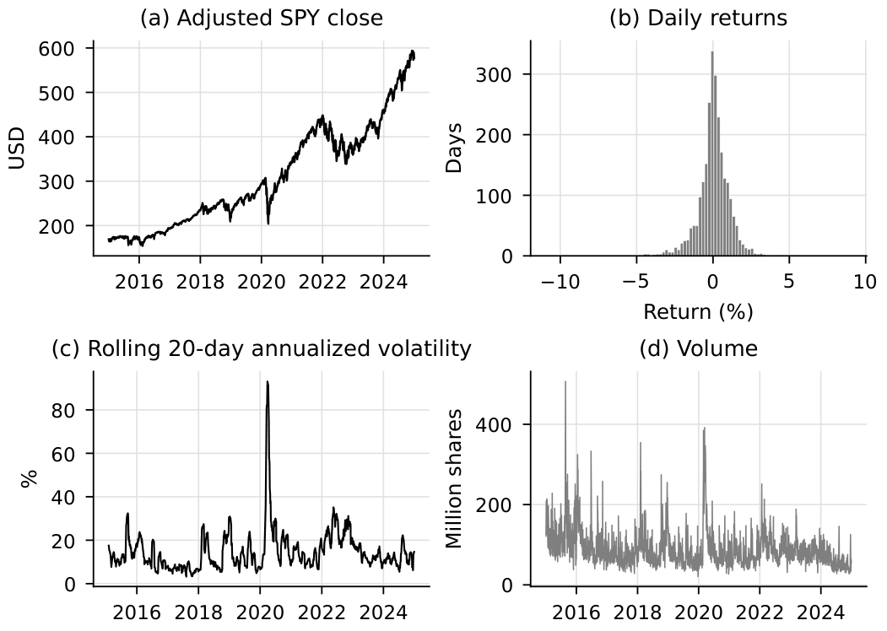
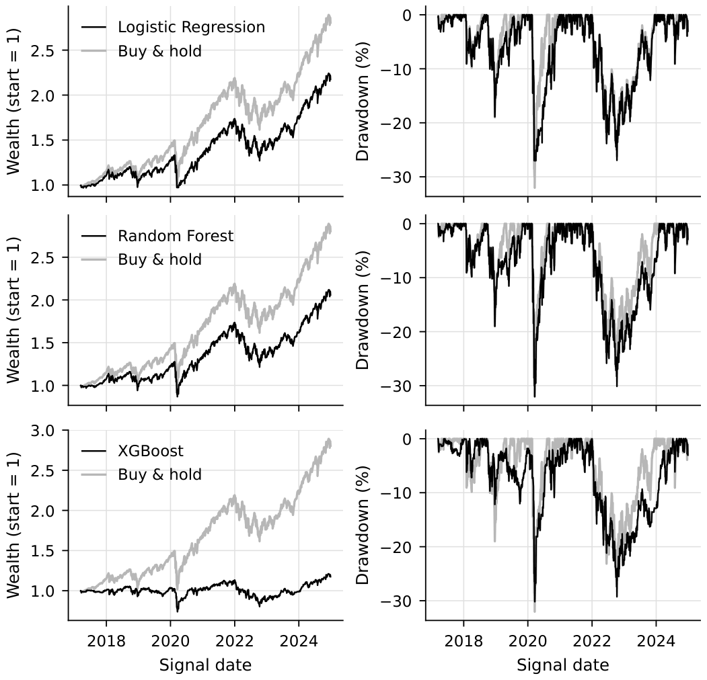
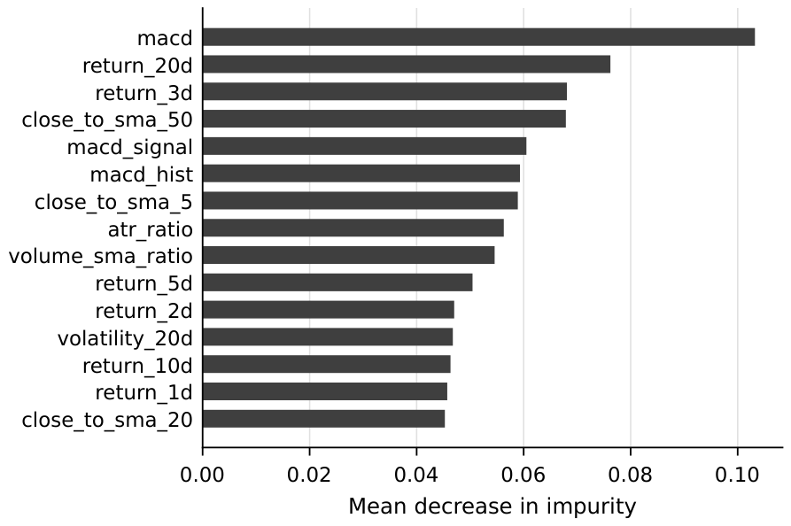

Chapter 7: Socio-Technical Transformation of Algo Trading
AI tutorial
This page accompanies Chapter 7 of Mastering AI-Powered Finance. Use cases, practical activities, and discussion topics are in the printed chapter. Section, equation, and figure numbers that are not on this page refer to the printed chapter.
- Notebook: Download the notebook or the notebook with its data files. The notebook is the reviewed, runnable version of this tutorial, with saved outputs; its code can differ in places from the listings on this page.
- Packages:
matplotlib,numpy,pandas,scikit-learn,xgboost,yfinance. - Data:
data/spy_2015_2024.csv(included in the download with data files). - API key: none needed.
AI Tutorial: Building an ML-Enhanced Trading System
This tutorial implements a complete ML-driven equity trading pipeline using real market data for the S&P 500 ETF (SPY). The system follows the “New Quant” pipeline described in Chapter 6: data ingestion, feature engineering, ML signal generation, walk-forward backtesting, and performance evaluation. The full implementation is available in the chapter’s companion notebook.
Phase 1: Feature Engineering
This phase converts a decade of raw SPY price history into a panel of technical features and a binary up/down label, then characterizes the class distribution the downstream models must learn against. Unlike the synthetic-data tutorials elsewhere in this book, the inputs here are real: yfinance downloads actual daily Open, High, Low, Close, and Volume bars for the S&P 500 ETF (SPY) from January 2015 to December 2024, so the features describe genuine market behavior rather than a planted pattern.
The function engineer_features computes eighteen indicators spanning four signal families, each grounded in the “Data, signals, and feature engineering” discussion of the Algorithm Design blueprint in Chapter 7. The trend family includes close_to_sma_5 (and its 10-, 20-, and 50-day counterparts), the percentage gap between today’s close and a rolling moving average, which is positive when price sits above trend; and macd_hist, the moving-average-convergence-divergence histogram, which measures the acceleration of short- versus long-horizon momentum. The mean-reversion family includes rsi_14, the 14-day Relative Strength Index that ranges from 0 (deeply oversold) to 100 (deeply overbought), and the Bollinger-Band position. The volatility family includes atr_ratio, the 14-day Average True Range expressed as a fraction of price, which rises when daily ranges widen and serves as a regime indicator; alongside 20-day annualized realized volatility. The momentum family is a set of lagged returns over horizons from one to twenty days. Every indicator is computed from rolling windows of past data only, so no future information leaks into a given day’s features.
The label is the direction of the return from the next session's open to the following session's open. Features become available after today's close, before either execution price. The always-up baseline is the up-label proportion on the same out-of-sample dates used for each classifier; full-period class balance is not a substitute. Exceeding that baseline is a preliminary comparison, not by itself evidence of statistically reliable trading skill.
In a production setting the feature set would be far larger and multi-resolution (the microstructure, intraday, and medium-horizon features catalogued in the “Data, signals, and feature engineering” section of the Algorithm Design blueprint), would be reconciled across vendors with point-in-time corporate-action handling, and would be validated for leakage before any model touches it. Here the scope is deliberately narrow: a single liquid ETF, daily bars, and a compact indicator set, enough to expose the core difficulty of daily equity prediction without obscuring it behind infrastructure.
import os
from pathlib import Path
import numpy as np
import pandas as pd
import yfinance as yf
from sklearn.ensemble import RandomForestClassifier
from sklearn.linear_model import LogisticRegression
from xgboost import XGBClassifier
from sklearn.metrics import accuracy_score
from sklearn.pipeline import make_pipeline
from sklearn.preprocessing import StandardScaler
# Load the bundled price snapshot. Yahoo serves back-adjusted history at
# float32 precision and its adjustment factor shifts slightly between
# requests. Those differences are economically meaningless but they move
# tree split points, so the model results below would not reproduce from a
# fresh download. Set REFRESH_MARKET_DATA=1 to pull current data instead.
SNAPSHOT = Path('data/spy_2015_2024.csv')
if SNAPSHOT.exists() and os.environ.get('REFRESH_MARKET_DATA') != '1':
data = pd.read_csv(SNAPSHOT, index_col=0, parse_dates=True)
else:
data = yf.download('SPY', start='2015-01-01', end='2024-12-31',
auto_adjust=True, progress=False)
if data is None or data.empty:
raise RuntimeError('SPY download returned no data; retry the market-data request.')
if isinstance(data.columns, pd.MultiIndex):
ticker_level = next(i for i in range(data.columns.nlevels)
if 'SPY' in data.columns.get_level_values(i))
data = data.xs('SPY', level=ticker_level, axis=1)
required = ['Open', 'High', 'Low', 'Close', 'Volume']
if data.empty or not set(required).issubset(data.columns):
raise RuntimeError('SPY download is empty or incomplete; retry the market-data request.')
data = data.sort_index()
print(f'Loaded {len(data)} trading days for SPY')
def engineer_features(df):
features = pd.DataFrame(index=df.index)
close, high, low, volume = df['Close'], df['High'], df['Low'], df['Volume']
# Trend: price position relative to moving averages
for w in [5, 10, 20, 50]:
features[f'close_to_sma_{w}'] = close / close.rolling(w).mean() - 1
# MACD
ema12 = close.ewm(span=12, adjust=False).mean()
ema26 = close.ewm(span=26, adjust=False).mean()
features['macd'] = ema12 - ema26
features['macd_signal'] = features['macd'].ewm(span=9, adjust=False).mean()
features['macd_hist'] = features['macd'] - features['macd_signal']
# RSI (14-day)
delta = close.diff()
gain = delta.where(delta > 0, 0.0).rolling(14).mean()
loss = (-delta.where(delta < 0, 0.0)).rolling(14).mean()
features['rsi_14'] = (100 - (100 / (1 + gain / loss)))
features.loc[(gain == 0) & (loss == 0), 'rsi_14'] = 50.0
# Bollinger Band position
bb_mid = close.rolling(20).mean()
bb_std = close.rolling(20).std()
features['bb_position'] = ((close - bb_mid) / (2 * bb_std)).where(bb_std != 0, 0.0)
# Volatility
tr = pd.concat([high-low, (high-close.shift(1)).abs(),
(low-close.shift(1)).abs()], axis=1).max(axis=1)
features['atr_ratio'] = tr.rolling(14).mean() / close
features['volatility_20d'] = close.pct_change(fill_method=None).rolling(20).std()*np.sqrt(252)
# Volume and lagged returns
features['volume_sma_ratio'] = volume / volume.rolling(20).mean()
for lag in [1, 2, 3, 5, 10, 20]:
features[f'return_{lag}d'] = close.pct_change(lag, fill_method=None)
return features.replace([np.inf, -np.inf], np.nan)
features = engineer_features(data)
print(f"Engineered {len(features.columns)} features")The following output was generated from the corrected example using a Yahoo download during review. Vendor revisions and library versions can change results; adjusted OHLC prices are a historical corporate-action approximation rather than actual point-in-time fills:
Downloaded 2515 trading days for SPY
Engineered 18 featuresBefore engineering features, it is instructive to examine the raw data. Figure 1 presents four views of the SPY time series. Panel (a) shows the closing price trajectory, which nearly triples over the decade but follows a path that is far from smooth — the sharp drawdown in early 2020 and the extended decline in 2022 are clearly visible. Panel (b) reveals that daily returns exhibit the heavy tails and slight negative skew characteristic of equity markets: extreme negative days occur more frequently than a normal distribution would predict, a property that any risk-aware model must internalize. Panel (c) plots rolling 20-day annualized volatility, highlighting a key challenge for ML models: the market alternates between calm regimes (volatility below 10%) and crisis regimes (volatility exceeding 80% during the COVID-19 shock), meaning that features and model behavior are non-stationary. Panel (d) shows daily trading volume, which spikes during periods of stress — confirming that volatility and volume are correlated, and motivating the inclusion of volume-based features in our feature set.

The 18 features cover trend, mean reversion, volatility and momentum. Feature diversity alone does not prevent overfitting. The next phase reports both model accuracy and the always-up baseline on identical evaluation dates.
Phase 2: Walk-Forward Validation and Model Training
This phase trains Logistic Regression, Random Forest and XGBoost under walk-forward validation. For a signal formed after close \(t\), next_return is \(O_{t+2}/O_{t+1}-1\), and target indicates whether that return is positive. label_end records when the training outcome becomes observable. At each refit, only earlier features with fully realized labels are eligible; the immediately preceding signal's holding-period outcome is still unknown.
Walk-forward validation keeps training decisions in the past. The first test block starts after 504 mature training observations; each refit then predicts up to 21 subsequent signal dates. The final partial block is included. The review download produces 1,959 out-of-sample predictions per model, but the code reports the actual count rather than assuming a fixed length. Logistic scaling is fitted within each training-fold pipeline. A model refitted at close \(t\) can use labels ending at open \(t\), then acts at open \(t+1\).
The hyperparameters constrain model flexibility: Logistic Regression uses C=0.1, the Random Forest limits depth and leaf size, and XGBoost uses shallow trees and a restrained learning rate. Compare accuracy against always-up on the same test dates. The illustrative review run below has a 56.66% always-up baseline, which all three models miss. This does not identify the cause of underperformance or establish a universal ranking of model families. A production study also needs an untouched research holdout and controls for repeated strategy selection.
# Signal dated t is formed after close t; trade open t+1 to open t+2.
next_return = data['Open'].shift(-2) / data['Open'].shift(-1) - 1
label_end = pd.Series(data.index, index=data.index).shift(-2)
target = (next_return > 0).astype(float).where(next_return.notna())
dataset = features.join(target.rename('target')).join(
next_return.rename('next_return')).join(label_end.rename('label_end')).dropna()
feature_cols = list(features.columns)
def walk_forward(dataset, feature_cols, model_class, model_params,
train_size=504, step=21):
# One extra signal row is needed: the immediately preceding row's
# open-to-open label is still unknown at today's close.
first_test = train_size + 1
if len(dataset) <= first_test:
raise ValueError('Not enough observations for training and a test period.')
predictions, actuals, dates = [], [], []
for start in range(first_test, len(dataset), step):
candidates = dataset.iloc[:start]
train = candidates.loc[candidates['label_end'] <= dataset.index[start]]
test = dataset.iloc[start:start+step] # includes the final partial block
model = model_class(**model_params)
if isinstance(model, LogisticRegression):
model = make_pipeline(StandardScaler(), model)
model.fit(train[feature_cols], train['target'])
preds = model.predict(test[feature_cols])
predictions.extend(preds); actuals.extend(test['target'])
dates.extend(test.index)
return pd.DataFrame({'prediction': predictions, 'actual': actuals},
index=pd.DatetimeIndex(dates, name=dataset.index.name))
# Compare three model families. Scaling is fitted anew on each training fold.
models = {
'Logistic Regression': (LogisticRegression,
{'max_iter': 1000, 'C': 0.1}),
'Random Forest': (RandomForestClassifier,
{'n_estimators': 100, 'max_depth': 5, 'min_samples_leaf': 50,
'random_state': 42}),
'XGBoost': (XGBClassifier,
{'n_estimators': 100, 'max_depth': 3, 'learning_rate': 0.1,
'verbosity': 0, 'random_state': 42, 'n_jobs': 1}),
}
results = {}
for name, (cls, params) in models.items():
res = walk_forward(dataset, feature_cols, cls, params)
results[name] = res
baseline = accuracy_score(res['actual'], np.ones(len(res)))
print(f"{name}: accuracy = {accuracy_score(res['actual'], res['prediction']):.4f}; "
f"always-up baseline on same dates = {baseline:.4f}; n = {len(res)}")The review run reports the following matched-date accuracy comparisons:
Logistic Regression: accuracy = 0.5533; always-up baseline on same dates = 0.5666; n = 1959
Random Forest: accuracy = 0.5518; always-up baseline on same dates = 0.5666; n = 1959
XGBoost: accuracy = 0.5135; always-up baseline on same dates = 0.5666; n = 1959Logistic Regression and Random Forest score about 55.33% and 55.18%; XGBoost scores about 51.35%. All are below the 56.66% matched-date always-up baseline. Accuracy does not account for the size of gains and losses, transaction costs or exposure, so the next phase evaluates the actual return series.
Phase 3: Backtesting with Transaction Costs
This phase turns each model’s directional predictions into a tradable strategy and measures whether predictive accuracy survives contact with trading frictions. Model accuracy alone does not determine profitability: a model can be right more often than wrong yet still lose money if it trades constantly or is wrong on the days that matter most. The backtest function maps predictions to positions (position=1.0, fully long, when the model predicts “up”; 0.0, in cash, when it predicts “down”), earns the realized next_return on the held position, and subtracts trading costs.
The tc=0.001 argument charges 10 basis points per side, approximately 20 basis points for an entry followed by an exit. The strategy begins in cash, charges the first purchase, applies subsequent turnover fees before each holding-period return and charges final liquidation. Buy-and-hold uses identical dates and costs. CAGR compounds net returns, Sharpe assumes a zero cash/risk-free return, and maximum drawdown includes initial wealth 1.0 so the first loss is counted. A zero-volatility Sharpe is undefined.
The flat per-side charge is illustrative. Opening prices are assumed executable and there is no explicit market impact, partial filling, borrowing or cash interest. These simplifications limit the interpretation of the historical comparison; production execution would require instrument- and size-specific costs and a point-in-time data archive.
def backtest(preds_df, dataset, tc=0.001):
"""Long/cash open-to-open returns; tc is a proportional cost per side."""
locations = dataset.index.get_indexer(preds_df.index)
if (locations < 0).any() or (np.diff(locations) != 1).any():
raise ValueError('Predictions must cover consecutive dataset sessions.')
aligned = preds_df.join(dataset[['next_return']], how='left')
if not aligned['prediction'].isin([0, 1]).all() or not np.isfinite(aligned['next_return']).all():
raise ValueError('Expected binary predictions and finite forward returns.')
position = aligned['prediction'].astype(float)
# Start in cash, so the initial long entry incurs a fee as well.
turnover = position.diff().abs()
turnover.iloc[0] = position.iloc[0]
# Fees are applied before each holding-period return; liquidate at the
# final open and charge that closing fee on the remaining equity.
net = (1 - turnover * tc) * (1 + position * aligned['next_return']) - 1
net.iloc[-1] = (1 + net.iloc[-1]) * (1 - position.iloc[-1] * tc) - 1
return net.rename('net')
def performance_metrics(net):
if net.empty or not np.isfinite(net).all() or (net <= -1).any():
raise ValueError('Expected finite nonempty returns above -100%.')
cum = (1 + net).cumprod()
vol = net.std() * np.sqrt(252)
# Include starting equity 1.0 when measuring the first loss/drawdown.
peaks = cum.cummax().clip(lower=1.0)
return {'CAGR': cum.iloc[-1] ** (252 / len(net)) - 1,
'Volatility': vol,
'Sharpe (rf=0)': net.mean() * 252 / vol if vol > 0 else np.nan,
'Max Drawdown': (cum / peaks - 1).min()}
# Buy & hold uses identical dates and entry/exit cost assumptions.
comparison = {}
for name, res in results.items():
comparison[name] = performance_metrics(backtest(res, dataset))
benchmark = pd.DataFrame({'prediction': 1}, index=next(iter(results.values())).index)
comparison['Buy & Hold'] = performance_metrics(backtest(benchmark, dataset))
performance = pd.DataFrame(comparison)
print(performance.round(4))The run below uses the bundled price snapshot rather than a live download, which is what makes these figures reproducible. Yahoo serves back-adjusted history at float32 precision and its adjustment factor shifts slightly between requests. The differences are economically negligible, around one part in a million, but they move tree split points, and across repeated live downloads they shifted the XGBoost row by roughly two thirds of a percentage point of CAGR. Buy-and-hold stays stable across those same downloads because it is a smooth function of the prices, not because the prices themselves are fixed, so checking the benchmark does not detect the problem. Returns and volatility are shown as decimals:
Logistic Regression Random Forest XGBoost Buy & Hold
CAGR 0.1052 0.0973 0.0130 0.1419
Volatility 0.1638 0.1730 0.1494 0.1757
Sharpe (rf=0) 0.6929 0.6240 0.1614 0.8439
Max Drawdown -0.2702 -0.3205 -0.3327 -0.3205In this run none of the models beats buy-and-hold on Sharpe or CAGR. Logistic Regression gives approximately 10.52% CAGR and 0.69 Sharpe, compared with 14.19% and 0.84 for buy-and-hold. XGBoost trails badly, at roughly 1.30% net CAGR for 0.16 Sharpe. These are historical sample outcomes under the stated assumptions, not evidence of deployable alpha.
Only Logistic Regression improves on the benchmark drawdown, at about \(-27.02\%\) against \(-32.05\%\); XGBoost is deeper at \(-33.27\%\), and Random Forest matches the benchmark to four decimals because it is long on every session inside the benchmark’s peak-to-trough window. Sitting in cash for part of the sample lowers exposure, but lower exposure is not the same as timing the declines, and nothing here suggests any of the models anticipated them.
Figure 2 plots wealth and drawdowns from the corrected strategy and benchmark returns. Dates on the horizontal axis are signal dates; each signal earns its subsequent open-to-open holding-period return. All three model panels share the same evaluation dates and cost convention.
The panels show how each realized path differs from the passive benchmark. Model complexity alone does not explain any ordering: establishing overfitting requires evidence beyond a single historical performance comparison.

The feature-importance figure uses the final Random Forest training fold, including only labels realized by its refit date. Mean decrease in impurity describes that fitted model; it does not measure out-of-sample predictive contribution.

Figure 3 ranks the fifteen largest impurity-based importances from that final training fit. Correlated features can share or distort importance, and a high ranking does not show that a feature predicts regime changes. Time-respecting held-out permutation or ablation studies would be needed to assess incremental predictive value.
The corrected example demonstrates evaluation mechanics, not a reliable edge. A lower drawdown can result from holding more cash rather than from forecasting stress. Strong performance claims require checks for unavailable information, researcher selection, realistic execution and genuinely untouched evaluation data.
Suggested Extensions
The modular framework above can be extended in several instructive directions:
Sentiment integration: Add a news sentiment feature using FinBERT to score daily financial headlines, bridging the structured-data pipeline with the unstructured-data capabilities discussed in Chapter 6. The tutorial on the Chapter 6 page builds such a feature with an LLM.
Multi-asset universe: Apply the pipeline to individual stocks and construct a portfolio that diversifies across uncorrelated signals.
Ensemble methods: Combine predictions from all three models, weighted by rolling out-of-sample accuracy, into a single signal.
Reinforcement learning for position sizing: Replace the binary long/cash position with a continuous allocation determined by a DRL agent (e.g., PPO via FinRL (Liu et al. 2021)).
Regime-aware conditioning: Train separate models for different volatility regimes (e.g., VIX \(<\) 15 vs. VIX \(>\) 25) and switch between them based on current conditions.
Summary
You built an ML trading pipeline on SPY: eighteen features, three model families trained under walk-forward validation, and a backtest with transaction costs against buy-and-hold. The Chapter 6 tutorial adds a language-model sentiment signal that can join these features.